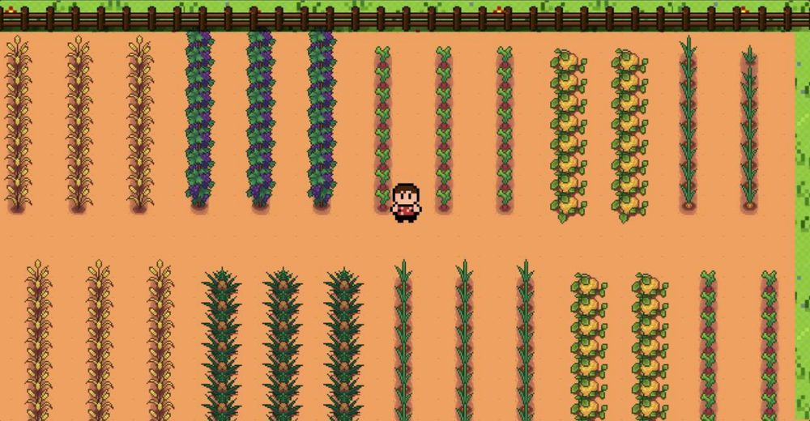

Zonas destacadas

Huerto de Cultivos
Zona donde el personaje principal lleva la comida y la cultiva, y esta se multiplica luego se cosecha y se reparte entre los habitantes

Centro comunitario
En este lugar tienes que dejar los cultivos recolectados y luego las personas de la comunidad bendran y ahi tomaran el alimento que necesiten